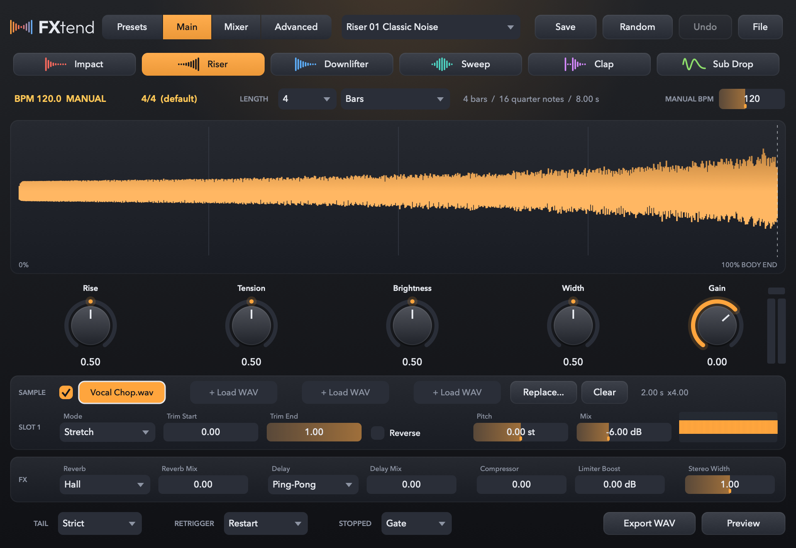
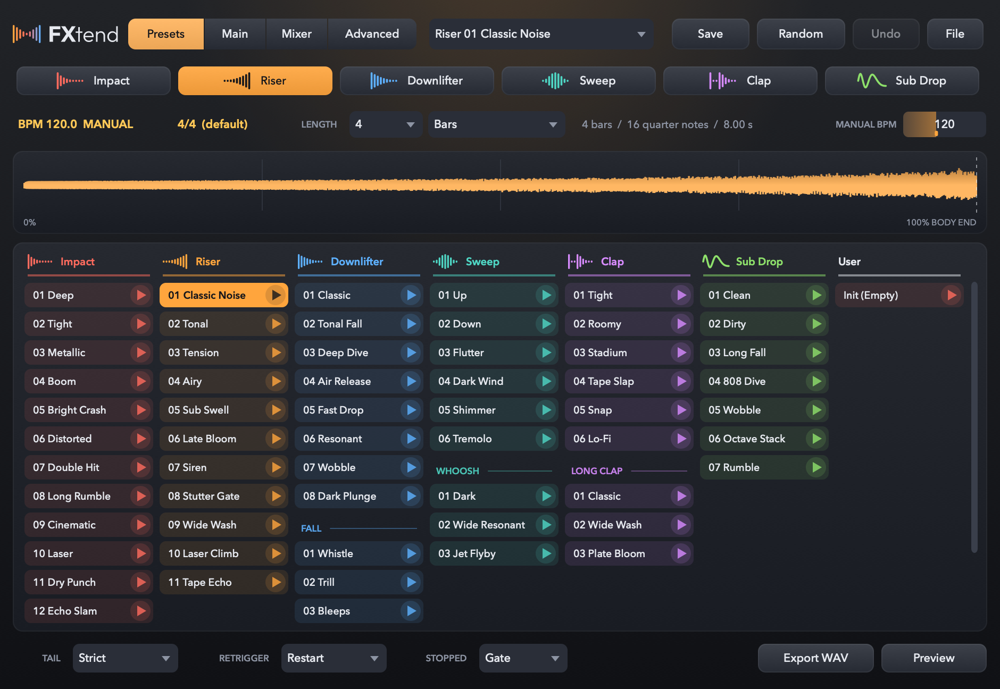
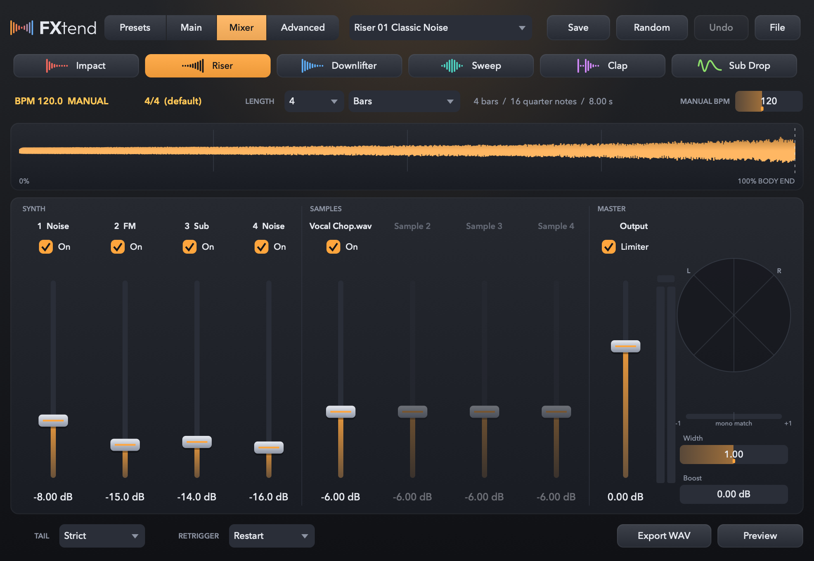
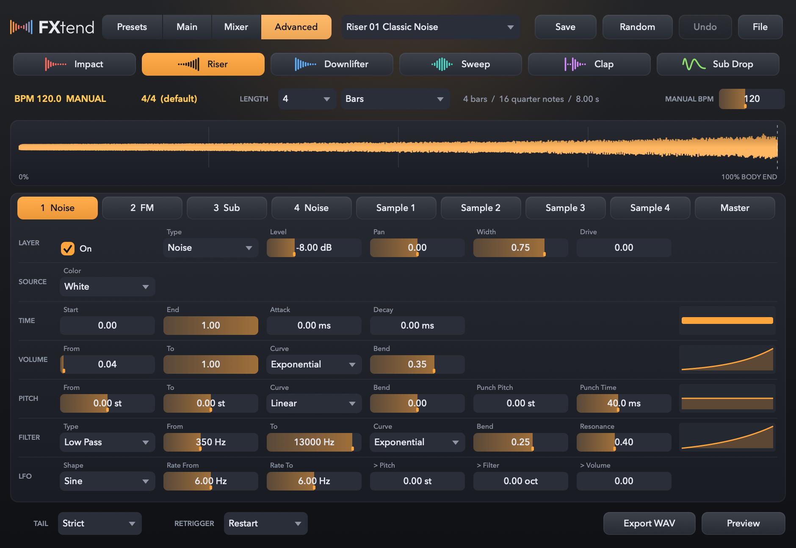
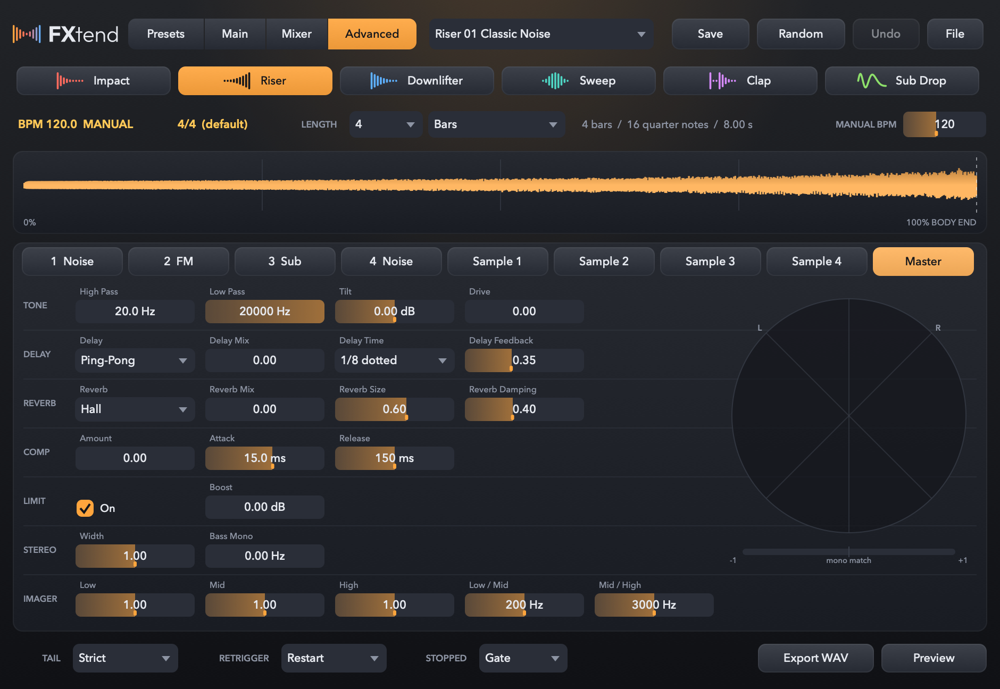

A plugin instrument just for FX.
Impacts and risers, from a single note.
FXtend is a VST3 / AU plugin built for one job: the transition sounds that carry a track from one section to the next. Impact, Riser, Downlifter, Sweep, Clap and Sub Drop. Set the length to, say, 4 bars, place one MIDI note, and the sound ends exactly where you want it, in time with your tempo.
- VST3
- Audio Unit
- Standalone
- macOS 12 or later
- Open source (AGPLv3)


Features
Drop in an effect without breaking your flow.
Length in bars and beats
Set it to 4 bars and the sound ends exactly 4 bars after the note. There is no need to stretch the note to match. If the tempo changes along the way, the end still lands on the bar.
No samples required
Every sound comes from the built-in synths (Noise / Sub / FM / Transient / Clap). All 61 factory presets work straight away, with nothing extra to install.
Layer your own samples
Load up to four WAV or AIFF files. Stretch fits them to the length without changing the pitch. Resample, Loop and One-shot are there when you want something different.
Two ways to end
Strict cuts to silence right at the end point. Natural lets only the reverb and delay ring out.
Export to WAV
Write the sound you are hearing to a WAV file at the current tempo and length. Handy when you would rather put it on an audio track.
Take it to another Mac
Pack a preset and the samples it uses into a single file (.fxtendpack).
Six FX types
Each type has four knobs, so you can reshape the sound without opening the detailed settings. The clips below are factory presets rendered at 128 BPM, 2 bars long.
Impact
One big hit. Its ring fades away within the length you set.
Punch · Sub · Brightness · Tail
Riser
Builds steadily toward the end and peaks at the very last moment.
Rise · Tension · Brightness · Width
Downlifter
A riser in reverse: it falls toward the end and bottoms out right on it.
Fall · Depth · Air · Width
Sweep
Noise rushing past as a filter moves. Wind-like whooshes live here too.
Direction · Cutoff Range · Noise Color · Width
Clap
Claps built from layered bursts of noise, including long-tailed Long Claps.
Density · Spread · Body · Tail
Sub Drop
Bass that sinks. It ends the moment it reaches the pitch you set.
Start Pitch · End Pitch · Weight · Drive
Screens
The window stays the same size and only the middle changes. Click an image to see it full size.








How to use
Pick a preset and place a note. That is most of it.
- Load FXtend on an instrument track and pick a preset or an FX type.
- Set the length with
LENGTH(4 Bars, for example). The readout beside it shows how many quarter notes and seconds that comes to. - Place one MIDI note where the sound should start. Its pitch and length make no difference. Velocity sets the volume.
- Choose how it ends with
TAIL:Strictfor a clean cut,Naturalto keep the tail. - Want more control? Open
Advanced.Export WAVwrites the sound straight to a file.
Requirements
The current version is 0.1.1.
| OS | macOS 12 or later |
|---|---|
| CPU | Apple Silicon. Built to run on Intel Macs as well, but not yet tested on one. |
| Formats | VST3 / Audio Unit / standalone app |
| In and out | MIDI in, stereo out |
| Testing | Passes auval and pluginval (strictness 10) as both VST3 and AU. Full testing in Cubase and Logic Pro is still to come. |
| Not yet | Windows, changing the pitch or preset by note, dragging a WAV straight into the DAW |
Download
Download the installer, open it and follow the steps. You can choose which of VST3, Audio Unit and the standalone app to install.
Download the installer (macOS)
You can also build it from source. You will need Xcode and CMake 3.24 or later.
git clone https://github.com/cheebow/FXtend.git
cd FXtend
cmake -B build -G Xcode
cmake --build build --config ReleaseWhen the build finishes, the plugins are copied into VST3 and Components under ~/Library/Audio/Plug-Ins. The README (in Japanese) explains how to uninstall.
License
FXtend is free software, released under the GNU Affero General Public License v3.0 (AGPLv3).
- JUCE 9 (AGPLv3): the plugin framework and the user interface
- Rubber Band Library 4 (GPL v2 or later): time stretching that keeps the pitch
- The lettering in the logo uses outlines from Outfit (SIL Open Font License 1.1).
- No third-party audio is included. For samples you load yourself, please check that you have the right to use them.